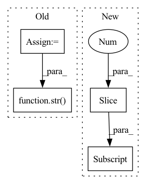

Pattern ID :20100
Before Change
// create config and dataset
dataset_builder = self.dataset_tester.load_builder(dataset_name, config, data_dir=processed_temp_dir)
// get version
version = dataset_builder.version
version_name = str( version.major) + "." + str(version.minor) + "." + str(version.patch)
// dowloads dummy data
path_to_dummy_data = self.dataset_tester.download_dummy_data(After Change
def test_load_dataset(self, dataset_name):
// test only first config
configs = self.dataset_tester.load_all_configs(dataset_name)[:1]
self.dataset_tester.check_load_dataset(dataset_name, configs)
@slow
def test_load_dataset_all_configs(self, dataset_name):In pattern: SUPERPATTERN
Frequency: 4
Non-data size: 4
Instances Fragment ID: 65794123
Project Name: huggingface/datasets
Commit Name: 24d1ec8ac95909c8227ddfa1086645bd48eb14df
Time: 2020-05-05
Author: patrick.v.platen@gmail.com
File Name: tests/test_dataset_common.py
M Class Name: DatasetTest
N Class Name: DatasetTest
M Method Name: test_load_dataset(2)
N Method Name: test_load_dataset(2)
M Parent Class: parameterized.TestCase
N Parent Class: parameterized.TestCase
M File Name: tests/test_dataset_common.py
N File Name: tests/test_dataset_common.py
M Start Line: 141
M End Line: 173
N Start Line: 174
N End Line: 175
Before Change
class ONNXInfer:
def __init__(self, cfg) -> None:
save_dir = Path(cfg["SAVE_DIR"])
model_path = save_dir / f"{cfg["MODEL"]["NAME"]}_{cfg["MODEL"]["VARIANT"]}.onnx"
// onnx model session
self.session = onnxruntime.InferenceSession(str( model_path) )
// preprocess parameters
self.size = cfg["TEST"]["IMAGE_SIZE"]After Change
self.input_name = self.session.get_inputs()[0].name
// preprocess parameters
self.size = self.session.get_inputs()[0].shape[-2:]
self.mean = np.array([0.485, 0.456, 0.406]).reshape(-1, 1, 1)
self.std = np.array([0.229, 0.224, 0.225]).reshape(-1, 1, 1)
def preprocess(self, image) -> np.ndarray: Fragment ID: 65794120
Project Name: sithu31296/image-classification
Commit Name: 3e74809d08cb98a28908d4adf6329d0a51e60a46
Time: 2021-07-07
Author: sithu31296@gmail.com
File Name: tools/inference/onnx_infer.py
M Class Name: ONNXInfer
N Class Name: ONNXInfer
M Method Name: __init__(2)
N Method Name: __init__(2)
M Parent Class:
N Parent Class:
M File Name: tools/inference/onnx_infer.py
N File Name: tools/inference/onnx_infer.py
M Start Line: 14
M End Line: 22
N Start Line: 13
N End Line: 19
Before Change
return stat_info_dict
def get_text(self):
unit_num_keys_list = sorted(self._stat_info_record.keys())
headers = ["type"] + [f"f{frac_id}_s{side_id}" for (frac_id, side_id) in unit_num_keys_list ]
table_data = []
game_count_line_data = ["game_count"] + [str( int(self._stat_info_record[k]["barracks_lv1"].count)) for k in unit_num_keys_list ]
table_data.append(game_count_line_data)
for item in self.data_keys:
line_data = [item] + ["{:.3f}".format(self._stat_info_record[k][item].val) for k in unit_num_keys_list ]After Change
return stat_info_dict
def get_text(self):
headers = [item[:5] for item in self.data_keys] + ["game_count"]
table_data = []
line_data = [f"{self.stat_info_record[k].val:.3f}" for k in self.data_keys] + \
[self.stat_info_record["game_count"]] Fragment ID: 65794131
Project Name: opendilab/di-star
Commit Name: 7643d10dd2537a0e8226d0ef1e5862cdc44f0bb7
Time: 2022-08-10
Author: zhangshenghan@sensetime.com
File Name: distar/ctools/worker/league/unit_num_stat.py
M Class Name: UnitNumStat
N Class Name: UnitNumStat
M Method Name: get_text(1)
N Method Name: get_text(1)
M Parent Class:
N Parent Class:
M File Name: distar/ctools/worker/league/unit_num_stat.py
N File Name: distar/ctools/worker/league/unit_num_stat.py
M Start Line: 79
M End Line: 92
N Start Line: 128
N End Line: 134